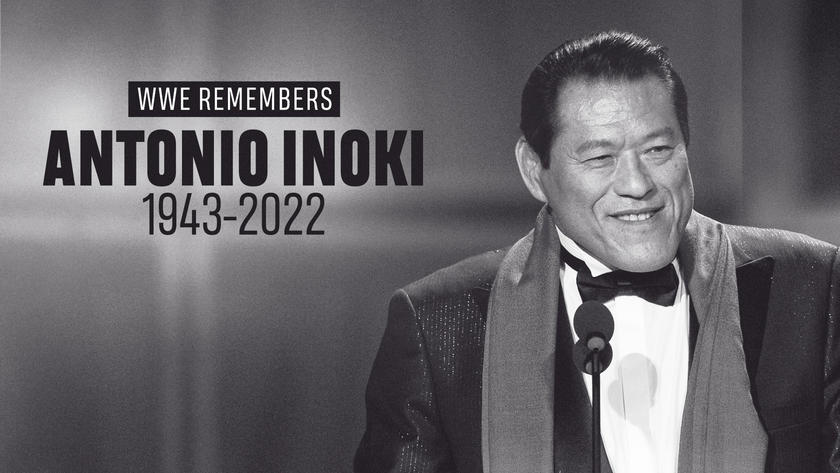

RIP Antonio Inoki.
La ceremonia de despedida tuvo lugar en Tokio, y muchas personas se dieron cita para dar el último adiós al Espíritu de Lucha Ardiente.Entre las diferentes personalidades luchística, fue posible ver al asesor de New Japan Pro Wrestling, Seiji Sakaguchi, así como a las leyendas Tatsuji Fujinami, Keiji Mutoh, Masahiro Chono, y las súper estrellas Hiroshi Tanahashi, Kazuchika Okada, Shinsuke Nakamura, Nobuhiko Takada, Yoshiaki Fujiwara, Masakatsu Funaki, Jushin Thunder Liger y Ogawa, Naoya, Kazuyuki. Asistieron también Kazuyuki Fujita, Kensuke Sasaki y otros discípulos de Inoki, luchadores actuales y retirados, y luchadores profesionales como Hisashi Shinma.
Nakamura vuelve a Japon.
El día de ayer, 30 de octubre, Pro Wrestling NOAH anunció que la súper estrella de WWE, Shinsuke Nakamura enfrentará a The Great Muta en el tradicional evento de Año Nuevo «The New Year 2023» en el Budokan Hall, como parte de la gira de despedida de Keiji Mutoh.
Naito vs Ospreay.
New Japan Pro Wrestling llegó al Osaka Prefectural Gymnasium para el gran cierre de la gira «Battle Autumn», donde se presentaron varias luchas de campeonato, las semifinales de un torneo y varios debuts.
Ultimatum de NJPW para Karl Anderson .
Karl Anderson regresó a WWE siendo aún el campeón NEVER de NJPW. Todo parecía indicar que Anderson perdería el NEVER en algún show posterior, para de esa manera poder continuar de manera exclusiva con WWE. Todo explotó cuando que salió la información de que Anderson estaba programado tanto para WWE Crown Jewel como NJPW Battle Autumn, shows que simultaneamente se realizarán el sábado 5 de noviembre. Ahí, se suponía que iba a defender ante Hikuleo. Claramente, NJPW no sabía que Anderson iría a Crown Jewel y Anderon dijo en redes sociales que ellos se equivocaron al no coordinarlo bien con él. Además, dijo que ya programarían otro show para la defensa.